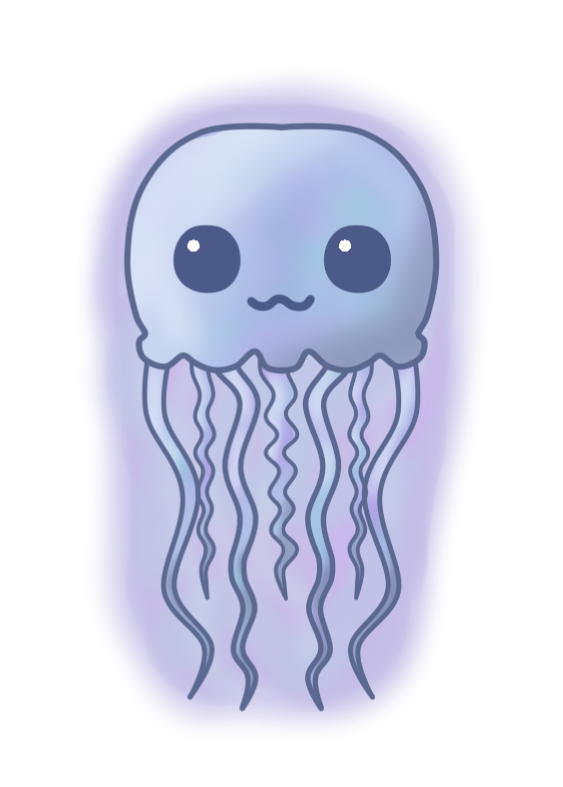
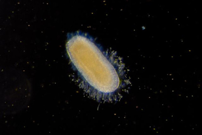

<html>

<head>

  <title>
    The Life Cycle of the Medusa
  </title>

  <link rel="stylesheet" href="style.css" />
  <link href="https://fonts.googleapis.com/css?family=Jomolhari&display=swap" rel="stylesheet">
  <script type='text/javascript' src='http://ajax.googleapis.com/ajax/libs/jquery/1.4.2/jquery.min.js'></script>
  <script src="script3.js"></script>
  <script type='text/javascript'>
    (function() {
      $(document).ready(changePage);

      function changePage() {
        if (sessionStorage.getItem("Medusa") == "visited p.5") {
          $('head').html('<title>The Life Cycle of the Medusa</title><link rel="stylesheet" href="style4.css"/><link href="https://fonts.googleapis.com/css?family=Jomolhari&display=swap" rel="stylesheet">');

          $('body').html('<h2> Plana Larvae </h2>' +

            '<div class="div3">' +
            '</img>' +
            "<p2> After the eggs of the female jellyfish are fertilized by the male's sperm," +
            ' they create a cute little baby type of embryo that then hatches into the' +
            " plana larvae,or whatever it's called, and it leaves the female's mouth," +
            " which is a gross way of birthing for such a beautiful fish. It's really crazy" +
            ' that these little itty bitty little weird looking things groe into such' +
            ' beautiful creatures, not like tadpoles that grow into weird slimy frogs or like' +
            ' dogs that sometimes end up being ugly (I love dogs, but sometimes there are some' +
            " really ugly ones out there). It's just really cool that these fish are so beautiful" +
            ' but also like really dangerous.' +

            '</div></p2></div>' +

            '<div class="flex-container">' +

            '<div class="div4">' +
            '<a href="Page8.html"><button></img>' +
            '</button> </a></div>' +

            '</div><h3>"Green Cursor Trail" by Colin from codepen.io.</h3>'
          );

        } else {
          $('head').html('<title>The Life Cycle of the Medusa</title><link rel="stylesheet" href="style.css" /><link href="https://fonts.googleapis.com/css?family=Jomolhari&display=swap" rel="stylesheet">');
          $('body').html('<h2> Planula Larvae </h2><div class="div3">' +
            "<p2>After the eggs of the female jellyfish are fertilized by the male's sperm, they create a type of embryo. They then hatch and little planula larvae leave the female's mouth or brood pouch and set out on their own lives. A planula is a tiny oval structure, the outer layer of which is lined with" +
            '</img>' +
            " minute hairs called cilia, which beat together to make the larva swim through the water. The planula floats for a few days on the surface of the water; if it isn't eaten by predators, it drops down to settle on a solid ground and begin its development into a polyp." +

            '</p2></div><br><br><br>' +

            '<div class="div4"><a href="Page4.html"> <button> Polyps and Polyp Colonies </button> </a></div>'
          );


        }
      }


    })();
  </script>
</head>

<body>
</body>


<!-- <body>

  <h2> Planula Larvae </h2>

  <div class="div3">
    <p2>
      After the eggs of the female jellyfish are fertilized by the male's sperm,
      they create a type of embryo.They then hatch and little planula larvae
      leave the female's mouth or brood pouch and set out on their own lives.
      A planula is a tiny oval structure,the outer layer of which is lined with
      </img>

      minute hairs called cilia, which beat together to make the larva swim through
      the water. The planula floats for a few days on the surface of the water;
      if it isn't eaten by predators, it drops down to settle on a solid ground
      and begin its development into a polyp.


    </p2>

  </div>
<br>
<br>
<br>
<br>
<br>
<br>
<br>
<br>
<br>
<br>
<br>
<br>
<br>
<br>
<br>
<br>
  <div class="div4">
    <a href="Page4.html"> <button> Polyps and Polyp Colonies </button> </a>
  </div>


</body>-->

</html>
